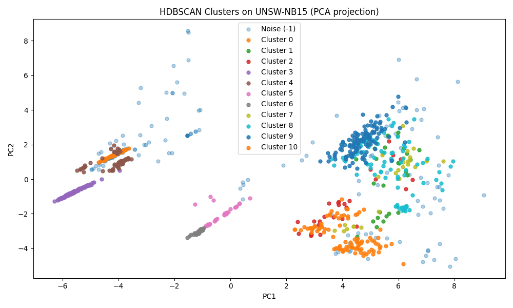
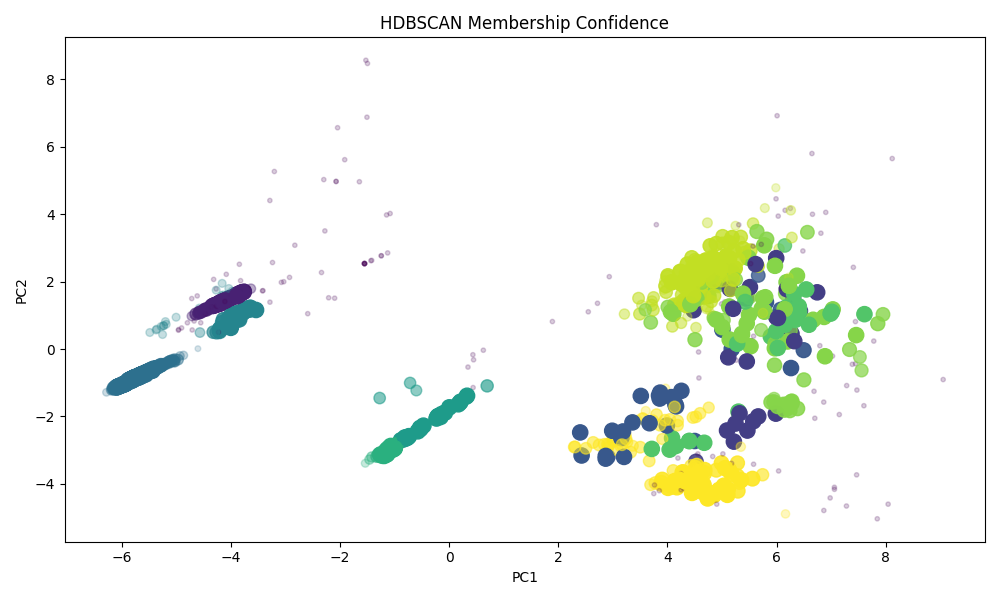
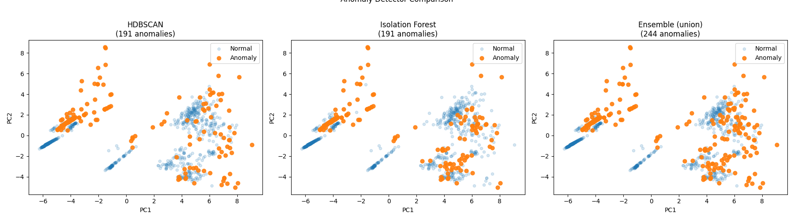

Detect Threats
Without Labels
An ensemble of HDBSCAN and Isolation Forest learns what normal traffic looks like, then flags anything that doesn't fit — no labeled attack data required.
Two fundamentally different detectors run in parallel, then their results are merged into union and intersection views so you can trade precision for recall as needed.
PCA Preprocessing
Raw UNSW-NB15 features are standardized and compressed into principal components
that explain 95% of variance. This strips noise and prevents high-magnitude
columns like sbytes from dominating the space.
HDBSCAN Clustering
Density-based clustering groups normal traffic into stable clusters.
Anything that doesn't belong to any cluster — label -1 —
is a candidate anomaly. No cluster count needed upfront.
Isolation Forest
Randomly builds isolation trees and scores each point by how few splits it takes to isolate. Anomalies isolate quickly. Provides an orthogonal signal to density-based detection.
PCA reduces the feature matrix to 2D for plotting. Each point is a network flow; noise points (anomaly candidates) are rendered separately.



Raw terminal output from a 1,000-row UNSW-NB15 sample run.
Ensemble (union) — best F1
Ensemble (intersection) — best precision
Takeaways from running the ensemble on a 1,000-row stratified sample of UNSW-NB15.
Full per-anomaly breakdown with attack-type inference, traffic stats, and behavioral descriptions.
Open Forensic Report →